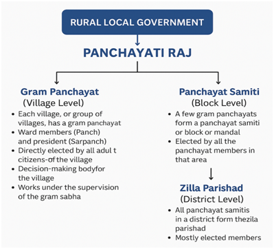

What Makes India a Federal Country?
1. Three-Tier Government System
India has a three tier government system (Central, State and Local government).
2. Three-Fold Distribution of Legislative Powers
The constitution of India provides a three-fold distribution of legislative power between the Union and State Government:
Union List
State List
Concurrent List
Residuary Subjects
- Residuary subjects are those not listed in the Union, State, or Concurrent lists of the Indian Constitution, and the Parliament has the power to legislate on them.
- These are essentially subjects that emerged after the Constitution was created, like computer software or space technology.
3. Constitutional Protection
Sharing of power between the Union Government and the State Governments is basic to the structure of the Constitution. The Parliament or the Union government cannot bring changes to this system unilaterally. It needs a two-thirds majority in the both houses.
4. Supreme Court as Arbiter
In case of any disputes Supreme Court, which is the highest court in the country resolves the disputes arisen related to the exercise of power among different levels of government.
5. Special Status for Some States
- We know that 'holding together' federations do not give equal power to its constituent units.
- Some States enjoy a special status. States such as Assam, Nagaland, Arunachal Pradesh and Mizoram enjoy special powers under certain provisions of the Constitution of India due to their peculiar social and historical circumstances.
6. Financial Autonomy
The Union and State Governments have the power to raise resources by levying taxes in order to carry on the government and the responsibilities assigned to each of them.
How is Federalism Practiced?
Following democratic policies were adopted by the government of India which made our country a successful federation:
1. Linguistic States
- In 1947, the boundaries of several old States of India were changed in order to create new States.
- This was done to ensure that people who spoke the same language lived in the same State.
- Some States were created not on the basis of language but to recognise differences based on culture, ethnicity or geography. These include States like Nagaland, Uttarakhand and Jharkhand.
Benefits from this decision:
- The formation of linguistic States made the country more united.
- It has also made administration easier.
2. Language Policy
- India did not declare any one language as the national language.
- Hindi was made the official language, but since it's the mother tongue of only about 40% of Indians, the Constitution provided safeguards for other languages.
- There are 22 scheduled languages, and candidates for central government jobs can take exams in any of them. States also use their own official languages for government work.
- Unlike Sri Lanka, India adopted a flexible and cautious approach. Though the Constitution planned to phase out English in 1965, strong opposition—especially from Tamil Nadu—led to its continued use alongside Hindi. This flexibility helped maintain unity in a diverse country and avoid conflicts over language.
3. Centre-State Relations
- Initially, when the same political party ruled both the Centre and most States, States didn't fully use their powers as independent federal units.
- When opposition parties came to power in some States, the Centre often tried to weaken them by misusing constitutional provisions — even dismissing State governments unfairly.
- A major shift happened after 1990 with the rise of regional parties and the beginning of coalition governments at the Centre.
- Since no single party could secure a majority in Lok Sabha, national parties had to work in alliances, giving more space and respect to regional parties.
- This fostered a culture of genuine power-sharing and boosted State autonomy.
- A landmark Supreme Court judgment also made it harder for the Centre to arbitrarily dismiss State governments.
Conclusion: As a result, India's federal structure today functions more effectively than in the early years after Independence.
Decentralisation in India
Decentralisation: When the concentrated power of the union government is distributed among different levels of government.
Importance of Decentralisation
- It reduces the burden of Union government.
- It increases the participation of people in decision making.
- It helps in addressing the local problems more effectively.
- Allows for a more balanced approach for the allocation of resources based on regional priorities.
73rd and 74th Amendment (1992)
By 73rd and 74th amendment to the constitution in 1992, following steps were taken to share more power with the local governments:
- It is constitutionally mandatory to hold regular elections to local government bodies.
- Seats are reserved in the elected bodies and the executive heads of these institutions for the Scheduled Castes, Scheduled Tribes and Other Backward Classes.
- At least one-third of all positions are reserved for women.
- An independent institution called the State Election Commission has been created in each State to conduct panchayat and municipal elections.
- The State governments are required to share some powers and revenue with local government bodies.
Rural Local Government (Panchayati Raj System)

- Village level: Gram Panchayat
- Block level: Panchayat Samiti
- District level: Zilla Panchayat
Urban Local Government
- Municipalities are set up in towns.
- Big cities are constituted into municipal corporations.
- Both municipalities and municipal corporations are controlled by elected bodies consisting of people's representatives.
- Municipal chairperson is the political head of the municipality.
- Mayor is the political head of the Municipal Corporation.
Challenges to Local Governments
- Elections are held regularly and enthusiastically, gram sabhas are not held regularly.
- Most state governments have not transferred significant powers to the local governments. Nor have they given adequate resources.
Fact: There are now about 36 lakh elected representatives in the panchayats and municipalities etc., all over the country.